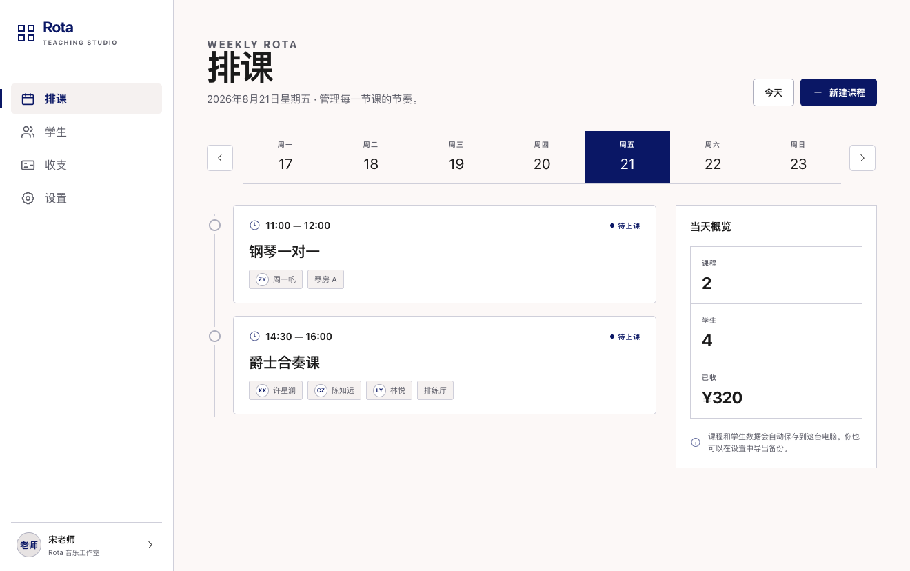
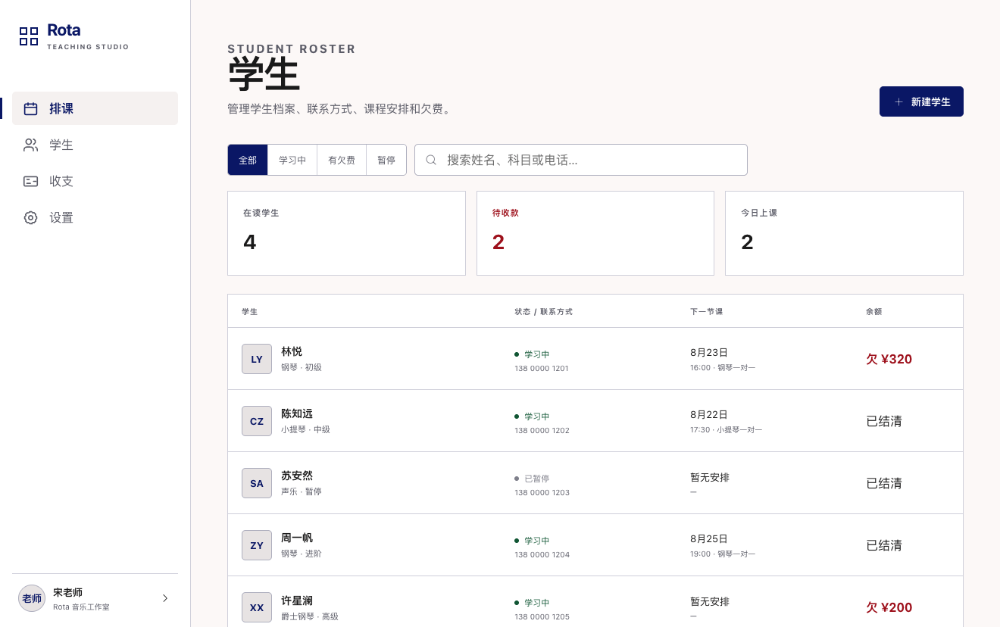
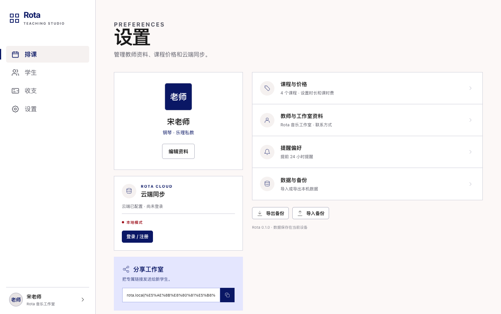

为独立教师设计
一款专注教学日常的排课应用。浏览器直接打开，也可下载 Mac 版；注册账号即可同步课程信息。

学生档案、联系方式、下一节课和待收款保持在同一个视图里。

按状态筛选，或直接搜索姓名、科目和电话。
下一次安排和待收金额不用在多个表格间查找。
音乐、健身、语言与一对一辅导都能使用。
不登录也能使用。注册 Rota 账号后，课程信息可在设备间同步，同时保留导入和导出备份。

适用于 Apple Silicon Mac，系统要求 macOS 12 或更高版本。